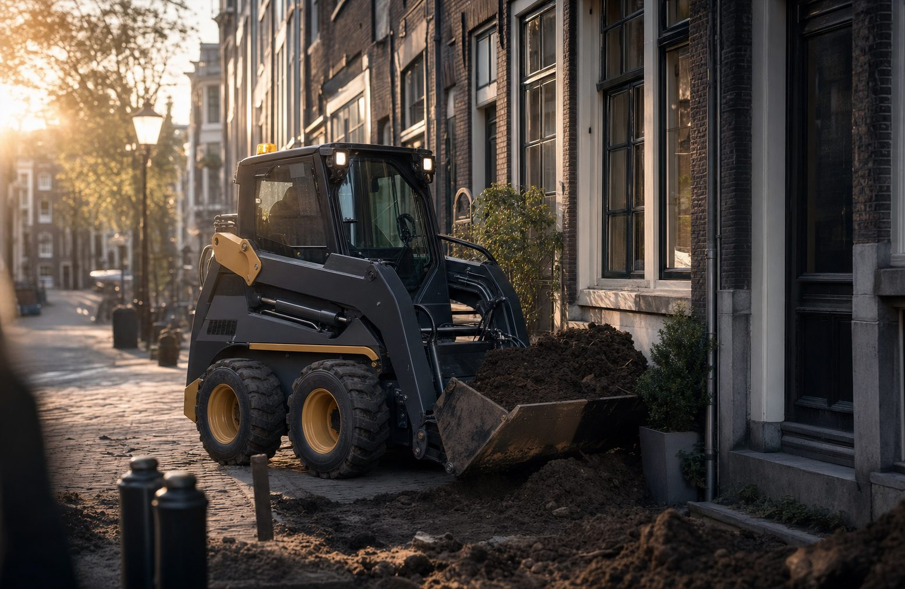
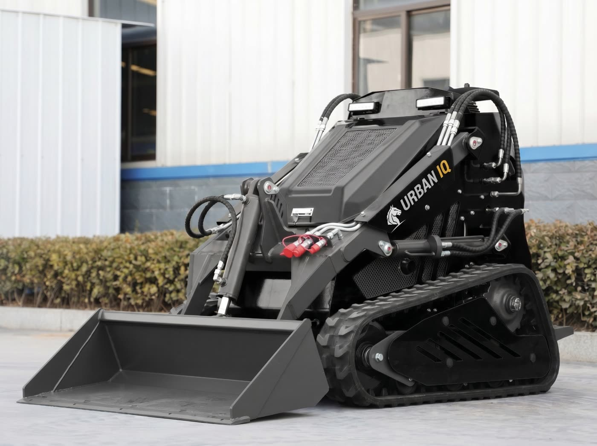

Compacte kracht, slim verbonden
Urban IQ Connect bouwt compacte, volledig elektrische machines die werken waar grote machines vastlopen — en verbindt ze, zodat elke machine slimmer wordt naarmate je hem gebruikt.

De stad verdient betere machines
Steden worden krapper, schoner en stiller. Toch werken we er nog te vaak met machines die voor het platteland zijn bedacht: te groot, te luid, te vervuilend. Wij draaien dat om.
Urban IQ-machines zijn ontworpen vanuit de stedelijke realiteit: smalle poorten, milieuzones, bestrating die heel moet blijven. Compact, elektrisch en verbonden — zodat ze passen én bijblijven.
Drie principes
Ze sturen elke beslissing — van het ontwerp van een machine tot de service erachter.
Gebouwd voor krapte
Als het niet in de stad past, bouwen we het niet. Compactheid is geen compromis, het is het uitgangspunt.
Zero-emissie, altijd
Volledig elektrisch is de standaard, niet de optie. Stil en schoon hoort bij de stad.
Verbonden by design
Connect zit in elke machine. Data maakt onderhoud voorspelbaar en inzet efficiënter.
Praat met het team achter Urban IQ
Of je nu machines zoekt, dealer wilt worden of mee wilt denken over de stad van morgen — we horen graag van je.